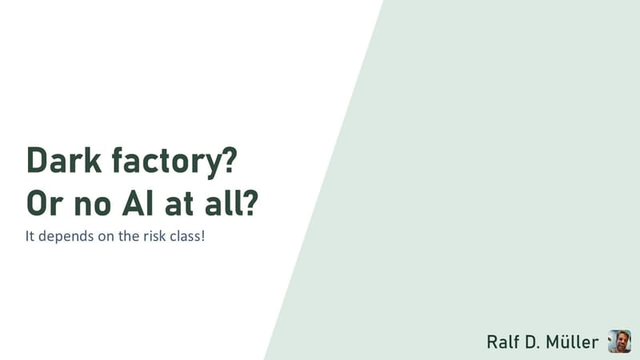
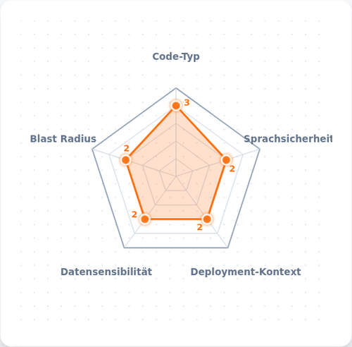
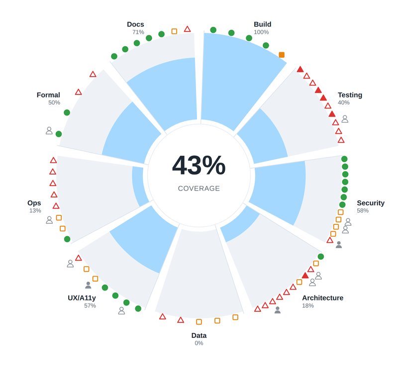

Dark Factory? It Depends on the Risk Class.
Questions, objections, a project of your own? Talk it over with your own AI.
The talk as a dialogue video
Two voices walk through the talk, slide by slide, in just under 18 minutes.

Foundry, not factory
“Dark factory” gets the dark part right and the factory part wrong: nothing in software is made twice. The blog post explains why foundry is the better word.
Let's keep talking
Questions, objections, experiences of your own? Connect with me on LinkedIn.
Go to LinkedIn →Risk Radar
Works out which risk class a use case falls into.

Harness Coverage Wheel
69 layers of error correction to check your own project against.
